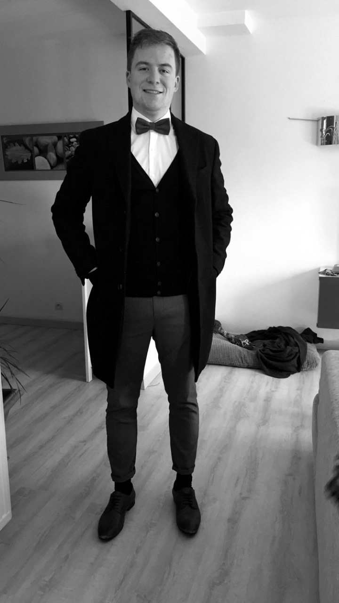

Salut, c'est Quentin !
Je m'appelle Quentin, j'ai 23 ans. Je suis étudiant chez MyDigitalSchool Nantes, en alternance chez padamRP.
Suite à ma licence en Management du sport, c’est avec un vrai engouement que j’ai signé pour un Bachelor 3ème année en communication qui nécessite rigueur et créativité. Les connaissances acquises au gré de mes formations et expériences me permettent aujourd’hui d’apporter mon aide à une entreprise et mes qualifications de communiquant seraient un atout pour votre structure.
